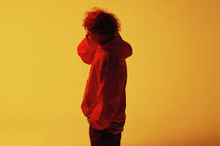
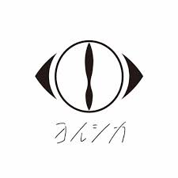

Vaundy（バウンディ、2000年6月6日 - ）は、日本のシンガーソングライター、 ミュージシャン、マルチアーティスト。所属レーベルはスターダストレコーズ内の Vaundy Artwork Studio。
ずっと真夜中でいいのに。（ずっとまよなかでいいのに、英語: ZUTOMAYO）は、 ボーカルのACAねを中心に結成された日本の音楽バンド。通称は「ずとまよ」。

ヨルシカは、コンポーザーのn-bunaと、 ボーカルのsuisによる日本の男女2人組のロックバンド。 2017年結成。2019年、ユニバーサルJよりメジャーデビュー。 レインボーエンタテインメント所属。

King Gnu（キングヌー）は、日本の4人組ロックバンド 所属レーベルはアリオラジャパン。 公式ファンクラブは「CLUB GNU」。
YOASOBI（ヨアソビ）は、日本の音楽ユニット。 メンバーは、コンポーザーのAyaseとボーカルのikura。 小説をもとに楽曲制作を行っている。